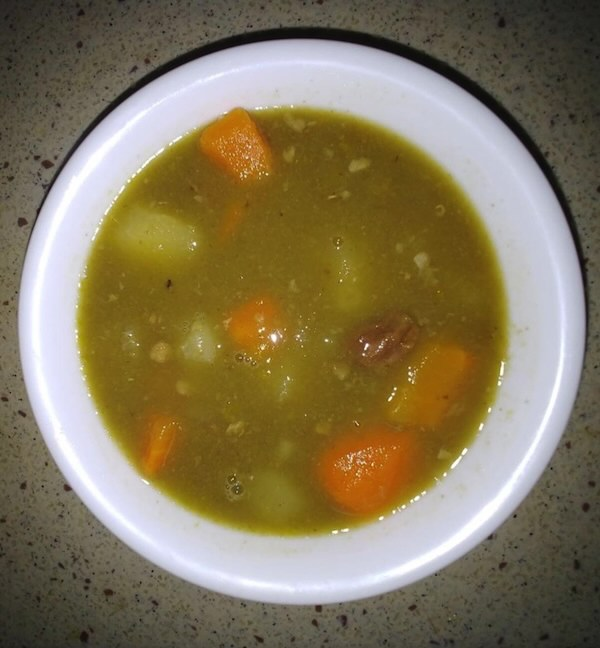

Student from across the globe were given the task of taking pictures their immediate natural surroundings and describing it.
This photo represents Nature to me in that I see a bumblee full of pollen heading to a native Milkweed perennial wildflower (Asclepias syriaca). This flowers grows, blooms, and feeds countless bees, monarch butterfly caterpillars every year as well as produces copious seeds to fly on the wind. This important plant is often seen as just a weed and ripped out. I'm hoping to change this cultural attitude in the minds of the young students I work with. Connecting people to plants and nature is my passion and life's work. I've been working with nature and children for about 10 years now.
What Nature Means To Me. I live in an area surrounded by water in eastern Long Island, New York, where we have a lot of Ospreys and other raptor species. The Ospreys are exclusively fish hunters and have a wingspan of 4-5 feet. They are making a big comeback in the area and some organizations are building Ospreys nests high on platforms for them to nest in. I am thinking about maybe building an Osprey nest on my property this fall or winter.
This is #nature that is closest to me. This is my new organic vegetable garden. I can use it as inspiration for my gardening blog, through which I'm trying to help those living in urban areas start growing their own organic vegetable to bring nature closer to their homes.
This image is without description.
Birds represent much of what I love about nature - they are beautiful, active members of their ecosystems and are easy to see wherever you are. They are excellent barometers of ecosystem health and biodiversity. When I travel birds are THE organisms that give me a real feeling for a place.
Week 2: #observenature
Student from across the globe were given the task of taking pictures of the living organisms found in their communities and briefly describing them.
Took a picture of this bullfrog during a “field trip” for my master naturalist training on a local property reserve. I feel that discussing the habitat and journey in life these fellas take would be a great place to share information to children…along with connecting with the sounds and sights in this habitat.
I found those flowers on the pine hill in Da Lat City, Vietnam. Those are called Polygala paniculata - species of flowering plant in the milkwort family. It is an annual herb which has a height between 15 and 50 centimetres (5.9 and 19.7 in). It is used as a medicine against phlegm cough. They bloom every November and December. Are there any kind of these in your place?
Here, a Carpenter bee feeds on a plant, Seim ( *Lablab purpureus*). I saw this is my backyard. There are so many pollinators in Trinidad that you do not notice at first. Children can open the pods of the seim plant to see the seeds which I can use to teach them that pollinators help plants produce fruits and seeds.
This is a picture of a caddisfly larvae I found in a pond near my home. These animals make their own homes from natural material they find in their environment. I would use this as a starting point to sustainable living, architecture or even global cultures, focusing on types of homes found around the world.
#observenature this is the underside of a wildflower that is in our pollinator plot on our farm in Ohio, USA. Working with children this pic demonstrates plant and water cycles, pollination and how seeds move. So many opportunities to teach the children that I work with. Looking at something from a different perspective.
I believe this is common fern moss - I didn't see how fern-like it looked until I got up close. It is growing on a fallen tree trunk and highed by the sun. It is exciting to make new discoveries while connecting with nature. I have an emotional response to plants and it is interesting to learn about plants I have never seen before. Hopefully I can help those participating in my programs to develop a sense of wonder and curiosity about the natural world that will bring them joy.
This is a Palm Warbler that I photographed today at one of our local Lexington, Kentucky parks. These beautiful little migrants brighten our early winter days with bright colors and constantly bobbing tails.
This is a Hen of the Woods mushroom (Grifola frondosa) one of my students found on our last hike. We were hiking alongside a river in a woodland preserve. This fungi is edible, however this one was past it's prime so we left it in the woods.
Week 3: #naturefood
Student from across the globe were given the task of taking pictures of local delicacies and describing their ingredients.
This is papaya salad. Papaya is picked from my mother's garden. This papaya is just ripe, has a crunchy, sly sweet taste. Papaya is grated into fine fibers. Served with rice noodles, boiled bacon, boiled shrimp, laksa leaves and mixed fish sauce. This is my favorite dish.
At the encouragement of my neighbor and his bag of end of the season green tomatoes, I made my very first green tomato pie with cranberries. It is a sweet pie and normally made in the southeastern part of the USA.
Cottage cheese from Chicago; mandarin oranges from Walnut Creek, Can.; Blueberries from Peru. This shocked me the most because we have bb farms in west central Florida and I was certain these would be local. I feel guilty these BB came so far when I could have purchased from market close by.
Here is a basket of goodies from a couple of weeks ago. I am lucky to live in a region where apples grow abundantly. These were all free dropped apples from local orchards. I made apple sauce and dehydrated apple rings from what we collected. The local orchardists set out buckets of the dropped apple for people to collect. I also picked pears at a local pick your own orchard. The tomatoes I grew in my own garden this summer and this is the last batch of them.
Acorn squash soup! Squash grown on the farm I teach on. Rosemary and Sage, from my garden at home. Warm soup on a chilly day after teaching outside all morning is wonderful. We teach the children about all the things grown here on the farm, pumpkins, corn for animal feed, sunflowers for the birds, Potatoes .This year we are having a Harvest celebration for the children and their families, we are going to incorporate all these things in what we serve. Pumpkin muffins, popcorn, potatoes chips, sun butter.
Inspired by this week's fun assignment, I cooked me a decent meal last night. All the ingredients were from the supermarket, except the tomatoes and the curry leaves in the rice. I used the last of the heirloom tomatoes from my garden, and curry leaves from my indoor plant.

Here is a soup made with callaloo (taro leaves), dasheen (taro), cassava (yuca), potato, carrots and beef - from markets and the grocery store. It is a tradition here to cook soup on a Saturday and some people still like to do this. Dasheen and cassava are locally grown foods, common on many Caribbean islands.